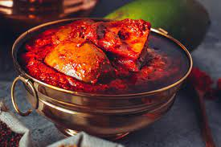

Avakai Pachadi

Avakaya pickles are usually made in the summer, this being the time for peak availability of green mangoes.
Green mangoes, hot oil, chilies and a variety of spices are the key ingredients. The process of preparation,
storage and serving is considered almost a ritual. Magnesium and potassium content helps in lowering
blood pressure levels and cholesterol levels. It helps in preventing hypertension and promotes heart health.
Ingredients
- 3 raw mangoes
- 8 tsp red chilli powder
- 2 tsp turmeric powder
- 1 tsp fenugreek powder
- 2 tsp mustard
- Salt to taste
- 1 tsp asafoetida
- 3/4 sesame oil
- 4 tsp black channa
How to prepare avakai
Steps to follow:
- Choose solid,firm and good variety mangoes.Wash,pat dry and cut in to cubes.
- Take mustard in a blender and powder nicely.
- Place cut mangoes in a clean vessel.Add red chilli powder,turmeric powder, fenugreek powder, asafoetida, mustard powder and salt.
- Add sesame oil and black channa.
- Mix well. Keep it covered in a clean jar and use after a week.
- The peculiarity of this pickle is addition of black channa and it gives a good aroma to the pickle, so don't avoid it.
- Adding red chilli powder is up to you, you may reduce it if you want.
- Do mix the jar daily once and keep it in sun light with a cloth tied to the jar. This increases the shelf live of the pickle.